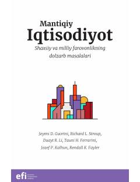

MIIqtisodiyotning asosiy qonuniyatlari va shaxsiy moliyaviy savodxonlik bo'yicha qo'llanma.
Ushbu kitob iqtisodiyotning asosiy tamoyillari, shaxsiy va milliy farovonlikni oshirish yo'llari hamda davlatning iqtisodiyotdagi o'rni haqida so'z yuritadi. Mualliflar iqtisodiy mantiq, bozor mexanizmlari va shaxsiy moliyaviy savodxonlikni rivojlantirish bo'yicha amaliy tavsiyalar berishadi.